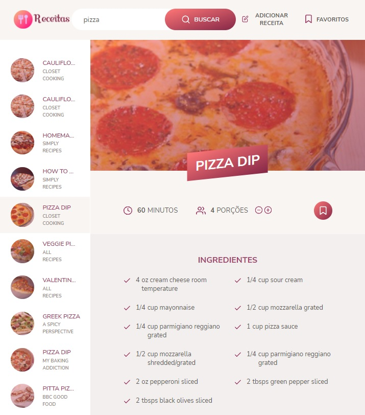

Receitas
Meu primeiro projeto usando uma API Externa, servindo de base de dados para consultas de receitas culinárias e também o primeiro projeto em que implementei a arquitetura de software MVC (Model-View-Controller).
Neste projeto precisei me aprofundar em tópicos mais avançados de JavaScript Puro como:
1 - Ter alguma base de dados com receitas, para consultar e mostrar no site.
2 - Modulazirar cada parte do site, para ter maior controle e organização.
3 - Usar CSS3 puro seria muito complicado para estilizar todo o site, eu precisava de alguma ferramenta para facilitar todo esse trabalho.
4 - De forma geral, tive muita dificuldade com esse projeto, pois não sabia o quanto eu ainda não sabia sobre JavaScript.
1 - Decidi usar a Forkify API , uma API em inglês de receitas culinárias, para ser a minha fonte de dados.
2 - Aprendi e coloquei em prática meus conhecimentos em arquitetura de software MVC (Model-View-Controller).
3 - Conheci e aprendi a usar a ferramenta Sass, que facilitou muito todo o trabalho estético do site.
4 - Precisei me aprofundar em tópicos mais avançados de JavaScript Puro. E no final, foi um ótimo projeto para me fazer aprender na prática tópicos mais complexos.